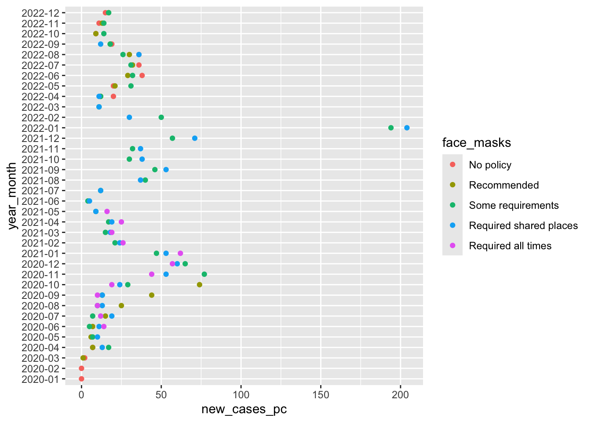
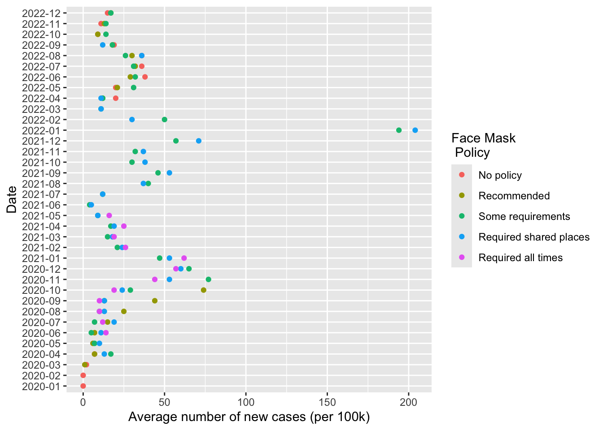
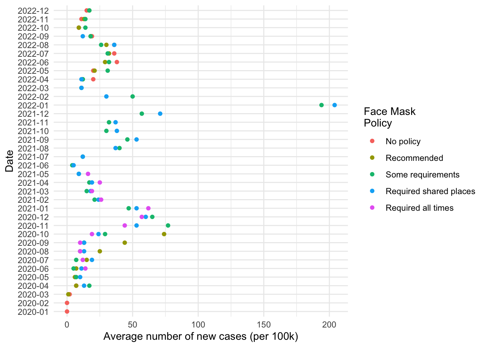
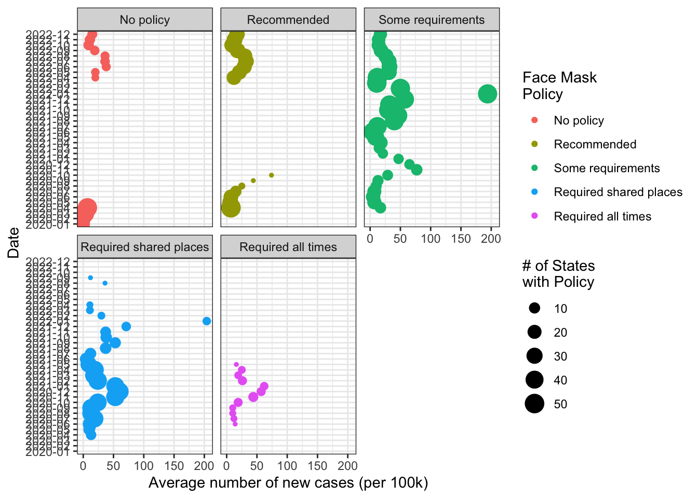

Lab 02 - Visualizing data on COVID-19 in the U.S.
Overview
Our goal for today is to first, reproduce this figure:
And then adapt and improve this figure (or other figures) to explore questions we have about the data
I don’t expect anyone to be able to recite from memory the exact code, functions, and syntax to accomplish this task.
That said, you’ve already seen the code you need.
It’s available to you in multiple places like the slides and the comments to last week’s labs
My hope is that this lab will help you do the following:
- Chunk big tasks into smaller concrete steps
- How do I produce a figure that shows the average rate of new cases pe month for states with a particular type of face mask policy?
- Well first, I’ll need to load some packages to work with and visualize data.
- Then, I’ll need to get the data. And then…
- How do I produce a figure that shows the average rate of new cases pe month for states with a particular type of face mask policy?
- Think and write programmatically
- In this .qmd file, I’ll first ask you to outline, conceptually, all the steps you’ll need to do to produce this figure.
- Don’t worry if you can’t think of all the necessary steps or aren’t sure of the order. We’ll be working through this collectively
- When we do code, I’ll ask you to organize your code as outlined below:
- Separate your steps into sections using the
#headers in Markdown - Write a brief overview in words that a normal human can understand, what the code in that section is doing
- Paste the code for that section into a code chunk
- Add brief comments to this code to help your reader understand what’s happening
- Knit your document after completing each section.
- Separate your steps into sections using the
- Mapping concepts to code
- You shouldn’t have to write much new code. Just copy and paste from the labs and slides.
- Your goal for today is to interpret that code and develop a mental map that allows you to say when I want to do this type of task (say “recode data”), I need to use some combination of these functions (
%>%,mutate(), maybegroup_by()orcase_when())
- Practice wrangling data
- How do you load data?
- How do you look at data?
- How do you transform data?
- Practice visualizing data
- Using the grammar of graphics to translate raw data into visual graphics
- Understanding the components of this grammar:
- data
- aesthetics
- geometries
- facets
- statistics
- coordinates
- themes
- Exploring what happens when we change these components
We’ll work in pairs and periodically check in as a class to check our progress, review concepts, and share insights.
If we finish early, you’re free to go. If you want, we can take some time to explore some additional figures we might produce like maps or lollipop plots.
Ok, let’s begin!
.html file{.unnumbered}
For every lab:
- Download the file
- Save it in your course folder
- Render the document
- Open the html file in your browser (Easier to read)
- Check
Render on Saveand render the document again after completing a section or chunk (Error checking) - Upload the final lab to Canvas.
1 Describe the components of the figure you’re trying to reprodce
Recall, that we need data, aesthetic mappings and geometries to produce a figure. You can find the code from lab 1 here
- What is the data set used? (Hint it’s a transformation of
covid_us)- From the comments to last week’s lab, I know I need to produce something like
cases_by_month_and_policyfrom thecovid_usdata
- From the comments to last week’s lab, I know I need to produce something like
- What are the aesthetic mappings in this plot
xaverage number of new cases per capita by month and policyya variable indexing year and monthcola variable indexing the face mask policy in place
- What is the geometry?
- points using
geom_point()
- points using
Outline the steps you will need to complete this process
- Set up our work space
- Download the COVID-19 data
- Get a high level overview of the data
- Recode the data
- create per capita measure of new cases
- create measure of face mask policy
- create year-month variable for summarizing
- Calculate the average number of new cases in a given month for states with a given policy on face masks
- Produce an initial figure
- Refine the figure
2 Set up our workspace
First we need to get R ready to work by loading (and if need installing) any packages that we will be using.
2.1 Create an object listing all the packages I will use today
This code creates a object called the_packages which contains a vector of character strings corresponding to the names of the packages I want to use today
the_packages <- c(
## R Markdown
"tinytex", "kableExtra",
## Tidyverse
"tidyverse","lubridate", "forcats", "haven","labelled",
## Extensions for ggplot
"ggmap","ggrepel", "ggridges", "ggthemes","ggpubr",
"GGally",
# Data
"COVID19","maps","mapdata","DT"
)2.2 Define a function to install and load packages
ipak <- function(pkg){
new.pkg <- pkg[!(pkg %in% installed.packages()[, "Package"])]
if (length(new.pkg))
install.packages(new.pkg, dependencies = TRUE)
sapply(pkg, require, character.only = TRUE)
}2.3 Use the ipak function to load the necessary packages
Now I run the ipak() giving it the object the_packages as an input. It sorts through the packages, checks to see if they’re installed, if not installs them, and then loads all of the packages so I can use them.
ipak(the_packages) tinytex kableExtra tidyverse lubridate forcats haven labelled
TRUE TRUE TRUE TRUE TRUE TRUE TRUE
ggmap ggrepel ggridges ggthemes ggpubr GGally COVID19
TRUE TRUE TRUE TRUE TRUE TRUE TRUE
maps mapdata DT
TRUE TRUE TRUE 3 Download the COVID-19 data
Now, I’ll load the data
load(url("https://pols1600.paultesta.org/files/data/covid.rda"))4 Get a high level overview of the data
There are lots of ways to do this. At a minium
- Get a sense of the dimensions of the data:
dim(covid)[1] 58809 47- Take a look at the first few rows
head(covid) id date confirmed deaths recovered tests vaccines
1 10b692cc 2020-03-16 NA NA NA NA NA
2 10b692cc 2020-03-17 NA NA NA NA NA
3 10b692cc 2020-03-18 NA NA NA NA NA
4 10b692cc 2020-03-19 NA NA NA NA NA
5 10b692cc 2020-03-20 NA NA NA NA NA
6 10b692cc 2020-03-21 NA NA NA NA NA
people_vaccinated people_fully_vaccinated hosp icu vent school_closing
1 NA NA NA NA NA NA
2 NA NA NA NA NA NA
3 NA NA NA NA NA NA
4 NA NA NA NA NA NA
5 NA NA NA NA NA NA
6 NA NA NA NA NA NA
workplace_closing cancel_events gatherings_restrictions transport_closing
1 NA NA NA NA
2 NA NA NA NA
3 NA NA NA NA
4 NA NA NA NA
5 NA NA NA NA
6 NA NA NA NA
stay_home_restrictions internal_movement_restrictions
1 NA NA
2 NA NA
3 NA NA
4 NA NA
5 NA NA
6 NA NA
international_movement_restrictions information_campaigns testing_policy
1 NA NA NA
2 NA NA NA
3 NA NA NA
4 NA NA NA
5 NA NA NA
6 NA NA NA
contact_tracing facial_coverings vaccination_policy elderly_people_protection
1 NA NA NA NA
2 NA NA NA NA
3 NA NA NA NA
4 NA NA NA NA
5 NA NA NA NA
6 NA NA NA NA
government_response_index stringency_index containment_health_index
1 NA NA NA
2 NA NA NA
3 NA NA NA
4 NA NA NA
5 NA NA NA
6 NA NA NA
economic_support_index administrative_area_level administrative_area_level_1
1 NA 2 United States
2 NA 2 United States
3 NA 2 United States
4 NA 2 United States
5 NA 2 United States
6 NA 2 United States
administrative_area_level_2 administrative_area_level_3 latitude longitude
1 Northern Mariana Islands <NA> 14.15569 145.2119
2 Northern Mariana Islands <NA> 14.15569 145.2119
3 Northern Mariana Islands <NA> 14.15569 145.2119
4 Northern Mariana Islands <NA> 14.15569 145.2119
5 Northern Mariana Islands <NA> 14.15569 145.2119
6 Northern Mariana Islands <NA> 14.15569 145.2119
population iso_alpha_3 iso_alpha_2 iso_numeric iso_currency key_local
1 55144 USA US 840 USD 69
2 55144 USA US 840 USD 69
3 55144 USA US 840 USD 69
4 55144 USA US 840 USD 69
5 55144 USA US 840 USD 69
6 55144 USA US 840 USD 69
key_google_mobility key_apple_mobility key_jhu_csse key_nuts key_gadm
1 <NA> Northern Mariana Islands US69 NA MNP
2 <NA> Northern Mariana Islands US69 NA MNP
3 <NA> Northern Mariana Islands US69 NA MNP
4 <NA> Northern Mariana Islands US69 NA MNP
5 <NA> Northern Mariana Islands US69 NA MNP
6 <NA> Northern Mariana Islands US69 NA MNP- Get a quick sense of the values of key variables to see if there’s any recoding you need to do (like with the negative values for
facial_coverings)
table(covid$facial_coverings)
-4 -3 -2 -1 0 1 2 3 4
410 5897 7362 275 3893 8604 17424 9191 622 summary(covid$confirmed) Min. 1st Qu. Median Mean 3rd Qu. Max. NA's
1 61491 317696 814586 956903 11826466 1459 5 Recode the data
This is a complex task.

So lets break it down conceptually. Roughly we’ll need to:
- Filter out U.S. territories
- Create a variable called
statefrom theadministrative_area_level_2variable - Group by this state variable and calculate:
- the number of new cases in a state on given day
- the number of new cases in a state on given day per capita
- the type of face mask policy in effect in a state.
- A variable that contains just the year and month of a given observation
I’d probably use the code from the comments to Lab 01 as my guide.
That code will also calculate the percentage of a state’s population that’s vaccinated, which might be interesting to explore later.
5.1 Filter out U.S. Territories
For simplicity, (and practice filtering observations), I’ve asked us to remove observations from U.S. territories.
The code below
- Creates an object called
us_territories. - Use this object to filter out observations that are US territories
- Creates a new data frame that is just observations from the 50 U.S. states. and D.C.
- Checks that this recoding seems to have worked
# U.S. Territories
territories <- c(
"American Samoa",
"Guam",
"Northern Mariana Islands",
"Puerto Rico",
"Virgin Islands"
)
# Filter out U.S. Territories
covid_us <- covid %>%
filter(!administrative_area_level_2 %in% territories)
# Check to make sure covid_us contains only 50 states and D.C.
dim(covid)[1] 58809 47dim(covid_us)[1] 53678 47length(unique(covid$administrative_area_level_2)) [1] 56length(unique(covid_us$administrative_area_level_2)) == 51[1] TRUE5.2 Create a state variable
This is purely for convenience, because typing administrative_area_level_2 is annoying. The code copies the values of this variable into a new variable called state using the mutate() function.
Mutate returns the original data frame plus the new column. We have to save this output for our our changes to persist (i.e. we have to assign the output of mutate() back into covid_us)
In last week’s lab, I just piped the output to the next command, did some more recoding with mutate, and then finally saved the output back into covid_us. In this lab, I’ll save the output after each step.
covid_us %>%
mutate(
state = administrative_area_level_2,
) -> covid_us5.3 Group by the state variable to calculate new Covid-19 cases
Now I use this shorter variable state to calculate the number of new cases (new_cases) in a given state on a given date, and rescale this variable so that it’s expressed in terms of new cases per 100,000 residents.
covid_us %>%
dplyr::group_by(state) %>%
mutate(
new_cases = confirmed - lag(confirmed),
new_cases_pc = new_cases / population * 100000
) -> covid_usThe slides from Tuesday, helped demonstrate what this code was doing, and why we wanted to group by state.
Here’s an example for a subset of the data from April 1, 2020 to April 7, 2020
We see that the lag() function simply moves the observation of a variable “up” one row so that we can take the difference between the total number of cases in a state on one date and the total number of cases on the date before, to calculate the number of new cases
covid_us %>%
filter(date >= "2020-04-01" & date < "2020-04-07")%>%
group_by(state) %>%
select(state, date, confirmed) %>%
mutate(
confirmed_lag1 = lag(confirmed),
new_cases = confirmed - lag(confirmed)
)# A tibble: 306 × 5
# Groups: state [51]
state date confirmed confirmed_lag1 new_cases
<chr> <date> <int> <int> <int>
1 Minnesota 2020-04-01 689 NA NA
2 Minnesota 2020-04-02 742 689 53
3 Minnesota 2020-04-03 789 742 47
4 Minnesota 2020-04-04 865 789 76
5 Minnesota 2020-04-05 935 865 70
6 Minnesota 2020-04-06 986 935 51
7 California 2020-04-01 9857 NA NA
8 California 2020-04-02 11190 9857 1333
9 California 2020-04-03 12569 11190 1379
10 California 2020-04-04 13796 12569 1227
# ℹ 296 more rowsIf we hadn’t grouped by state, then when we lagged the confirmed variable, R thinks the number of confirmed cases in California before April 1, 2020, is 986 which is actually the number of cases in Minnesota on April 7, 2020
# No group_by would create errors where the last observation from
# one state becomes the first lagged observation for the next state
covid_us %>%
filter(date >= "2020-04-01" & date < "2020-04-07") %>%
ungroup() %>%
select(state, date, confirmed) %>%
mutate(
confirmed_lag1 = lag(confirmed),
new_cases = confirmed - lag(confirmed)
)# A tibble: 306 × 5
state date confirmed confirmed_lag1 new_cases
<chr> <date> <int> <int> <int>
1 Minnesota 2020-04-01 689 NA NA
2 Minnesota 2020-04-02 742 689 53
3 Minnesota 2020-04-03 789 742 47
4 Minnesota 2020-04-04 865 789 76
5 Minnesota 2020-04-05 935 865 70
6 Minnesota 2020-04-06 986 935 51
7 California 2020-04-01 9857 986 8871
8 California 2020-04-02 11190 9857 1333
9 California 2020-04-03 12569 11190 1379
10 California 2020-04-04 13796 12569 1227
# ℹ 296 more rows5.4 Recode the facial_coverings variable
Next we use the case_when() function inside the mutate() function to create a variable called face_masks based on the values of the facial_coverings variable in the data.
case_when() when uses R’s ability to make logical comparisons. When the variable facial_coverings equals 0, R will input the character string "No policy" into the face_masks variable.
When the absolute value of facial_coverings equals 1 (i.e.facial_coverings equals 1 or -1 ), R will input the character string "Recommended" into the face_masks variable. And so on.
We use the abs() function to take the absolute value of the facial_coverings variable because codebook for these data implied:
In short: positive integers identify policies applied to the entire administrative area. Negative integers are used to identify policies that represent a best guess of the policy in force, but may not represent the real status of the given area. The negative sign is used solely to distinguish the two cases, it should not be treated as a real negative value.
We know from last weeks lab, that negative values in the U.S. typically seem to be cases where a city had a more stringent policy than the state (e.g. Chicago adopts more stringent face mask policies than Illinois).
Finally, we put a %>% after the output of case_when() and pass it’s output to the factor() function.
The . acts as sort of placeholder, factor() expects some input here (like a variable from a data frame), . tells R to use the output of case_when().
The levels = then transforms the character data produced by case_when() into a factor with an implicit ordering of levels (i.e. “No policy” < “Recommended”< “Some requirements” <“Required shared places” <“Required all times”) which turns out to be useful trick for organizing how data are plotted and visualized.
covid_us %>%
mutate(
face_masks = case_when(
facial_coverings == 0 ~ "No policy",
abs(facial_coverings) == 1 ~ "Recommended",
abs(facial_coverings) == 2 ~ "Some requirements",
abs(facial_coverings) == 3 ~ "Required shared places",
abs(facial_coverings) == 4 ~ "Required all times",
) %>% factor(.,
levels = c("No policy","Recommended",
"Some requirements",
"Required shared places",
"Required all times")
)
) -> covid_us5.5 Create a variable capturing the year and month of the observation
Finally we create some variables that extract components of an observation’s date:
year = year(date)returns just the year from a variable of classDatemonth = month(date)returns just the month from a variable of classDateyear_month = paste(year, str_pad(month, width = 2, pad=0), sep = "-")pastes these to variables together.str_pad(month, width = 2, pad=0)adds a leading 0 to any month with only 1 digit, to ensure that all the months have 2 characters.
The code from your lab also calculates the percent of a states population that is vaccinated, which isn’t strictly needed for today.
covid_us %>%
mutate(
year = year(date),
month = month(date),
year_month = paste(year, str_pad(month, width = 2, pad=0), sep = "-"),
percent_vaccinated = people_fully_vaccinated/population*100
) -> covid_usCreating separte year and month variables aren’t strictly necessary,
We could have written something like:
covid_us %>%
mutate(
year_month = paste(year(date), str_pad(month(date), width = 2, pad=0), sep = "-"),
percent_vaccinated = people_fully_vaccinated/population*100
) -> covid_usBut that year_month line was already feeling kind of clunky, and maybe we’ll want the year and month variables later.
6 Calculate the average number of new cases in a given month for states with a given policy on face mask
- To calculate averages, we’ll use the
mean()function - To calculate averages separately by month and year and by type of face mask policy, we’ll use the
group_by()function. - To make these values more legible, we’ll round them to integers
- To count the total number of states with a given policy in a given month, we’ll use the unique command to return a string with the list unique names of states with say Recommended face mask policies in a month (e.g. April 2020), and the
length()command to count up how many states. - Finally we’ll save the output of this collection of code to an object called
cases_by_month_and_policywhich we’ll use to produce our figure.
# Data
covid_us %>%
# Exclude observations with missing values on face_masks
filter(!is.na(face_masks))%>%
# Calculate summaries separately by Year-Month and face-mask policy
group_by(year_month,face_masks) %>%
# Summaries
summarise(
# Total number of observations
n = length(unique(state)),
# Average number of cases per capita
new_cases_pc = round(mean(new_cases_pc, na.rm = T )),
# Average number of total cases
total_cases = round(mean(confirmed, na.rm = T))
) -> cases_by_month_and_policy7 Reproduce the figure from Lab 01
Finally use cases_by_month_and_policy data frame to create a figure.
Recalling our grammar of graphics:
data=cases_by_month_and_policyggplot(...)initializes the plotting environmentaes()maps variables incases_by_month_and_policytoaestheticfeatures of the graph:x= year_monthsays to use values ofyear_monthcolumn on the x axisy = new_cases_pcsays use values from thenew_cases_pcon the y axiscol=face_maskssays to use a unique color each value offace_maskscolumn
geom_point()says to plot points using the aesthetic mappings we defined inggplotwith theaes()functioncoord_flip()flips the coordinates of the plot so that the values of x axis are now on the y axis, and the values of the y axis are now on the x axis.- Finally
-> fig1saves the output of this code to an object calledfig1. Writing this object on it’s own line will display the figure. Saving the our figure as an object will allow us to update it
# Data
cases_by_month_and_policy %>%
ggplot(
# Aesthetics
aes(
x = year_month,
y = new_cases_pc,
col = face_masks)
) +
# Geometries
geom_point() +
# Coordinates
coord_flip() -> fig1
fig1
8 Revise the figure in some way
Perhaps add a title and label. Or change the aesthetic mappings. Or maybe facet the figure by some other variable.
Check out the examples from Tuesday’s slides
Let’s see if we can improve this figure by:
- Adding meaningful labels and a title
- Changing the theme
- Changing the size of the points to reflect the total number of states with a policy in that month
- Faceting our plot by face mask policy
8.1 Adding meaningful labels and title
Because we saved the output of our ggplot to an object called fig1 we can add additional commands to this object using the + without having to rewrite all the code.
First let’s add better labels to the graph.
- Note that even though we flipped the coordinates, the
aesaesthetic mappings stay the same. So to change the label of the figures y-axis to “Date” we change the label ofx = "Date" ggplotautomatically generates a legend for aesthetic mappings likecolorWe can add a line break using the the special character\nin our code
fig1 +
labs(
x = "Date",
y = "Average number of new cases (per 100k)",
col = "Face Mask\n Policy"
)
Note the code above didn’t update fig1
fig1
We have to save the output (if we like it) for our changes to persist.
fig1 +
labs(
x = "Date",
y = "Average number of new cases (per 100k)",
col = "Face Mask\nPolicy"
) -> fig1
fig1
8.2 Changing the theme of the plot
Here’s an example of some different themes
# Black and white
fig1 +
theme_bw()# Minimal
fig1 +
theme_minimal()
# Classic
fig1 +
theme_classic()This is pretty personal, and depends of the figure itself. I like a white background and some guide lines:
fig1 +
theme_bw() -> fig1
fig1
8.3 Make the size of the dots reflect the number of states with this policy
In the cases_by_month_and_policy we have a column called n which is the number of states which had a given policy in a given month.
We can add an aesthetic to our plot that varies the size of the points by the number of states.
fig1 +
aes(size = n) -> fig1We call this type of plot a bubble plot{target=“_blank”
I have mixed feelings about multiple legends. We can remove the legend for size using the scale_size() function. I had to Google how to do this for the millionth time.
fig1 +
scale_size(guide = "none") -> fig18.4 Facet the plot
Varying the size of the dots by the number of states conveys more information. But makes the chart a little harder to read. Dots overlap.
The facet_wrap command will produce separate bubble plots for each level of the “facetting” variable, in this case `face_masks
fig1 +
facet_wrap(~face_masks) -> fig1
fig1
Now I think also want a second legend for the number of states
fig1 +
scale_size(guide = "legend")+
labs(
size = "# of States\nwith Policy"
)-> fig1
fig1
This seems pretty good if our goal was to show in general terms
- It shows the average number new cases for states with a given face mask policy over time.
- It shows how the mix of types of face mask policies states have adopted has changed over time
If our goal was to make comparisons across face mask policies over a given time period, I’m might still prefer something closer to our original graph.
9 CLASS SURVEY
Finally, please take a moment to complete this week’s class survey